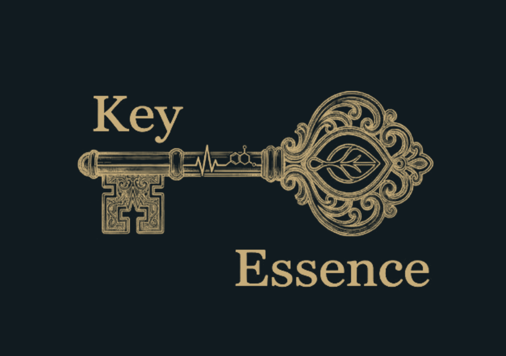
百人身體節奏與果實擴香風鈴
音符 ｜ 節奏 ｜ 果實
Molly
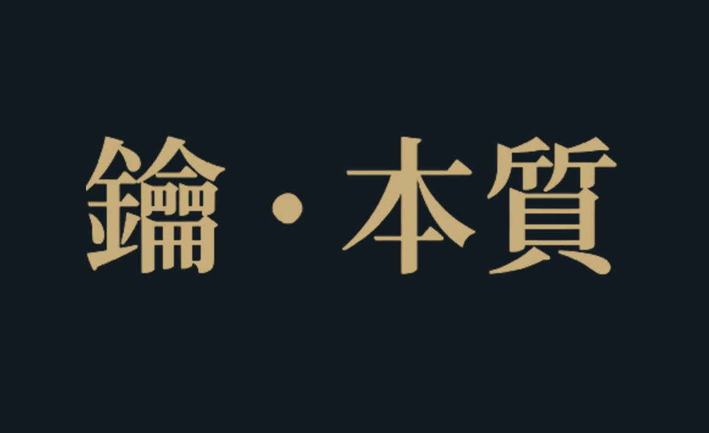
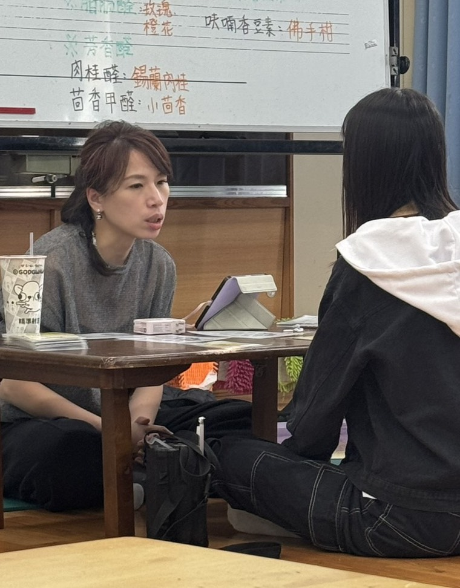
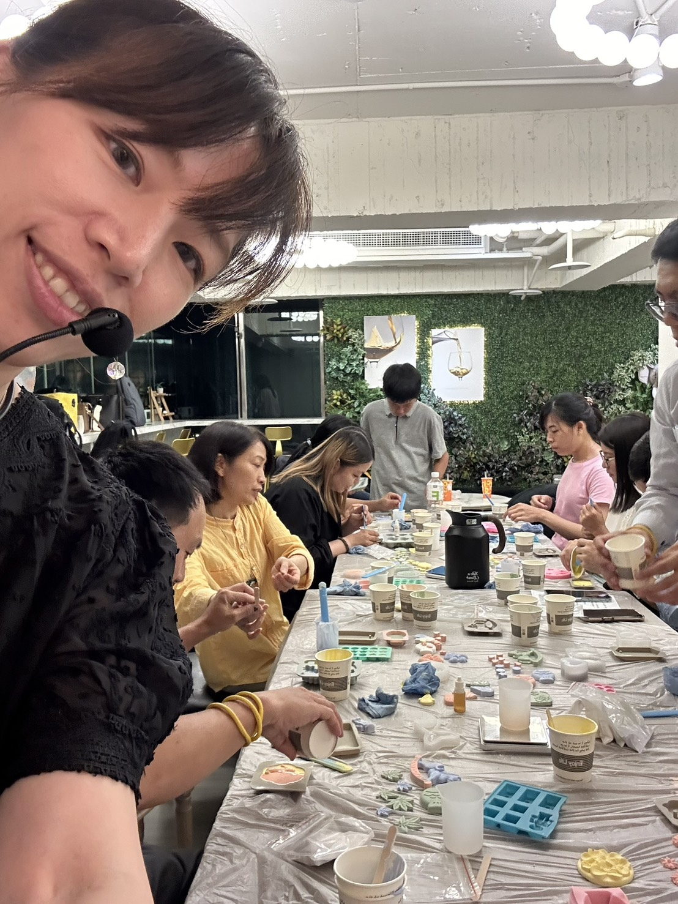
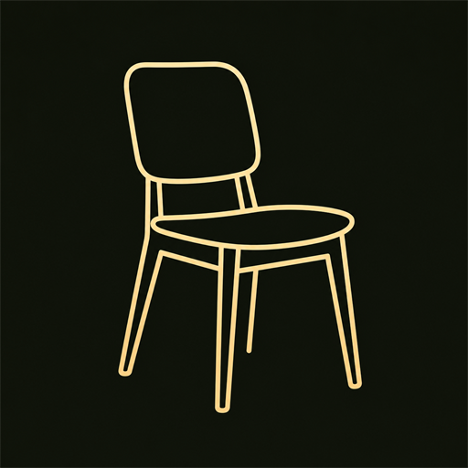
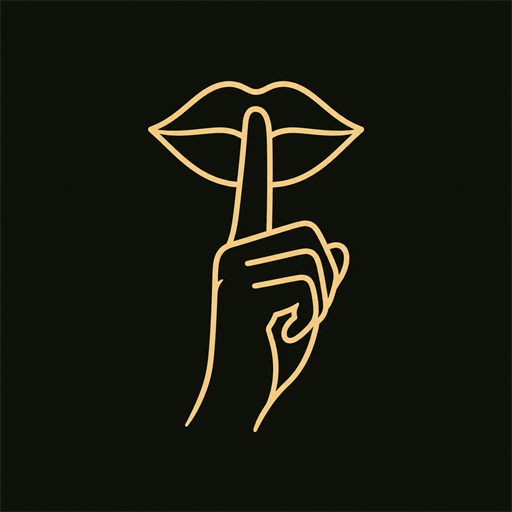
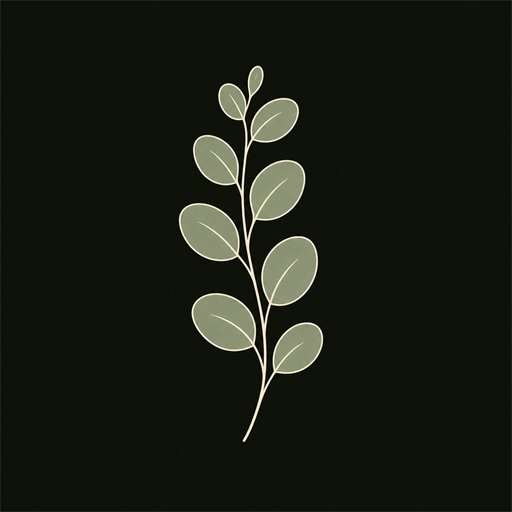
先讓椅子接住你
感覺腳底 · 感覺椅子 · 感覺身體重量
先讓大家聽見節奏，再讓身體跟上
停頓也很重要 · 安靜不是空掉，而是接住節奏
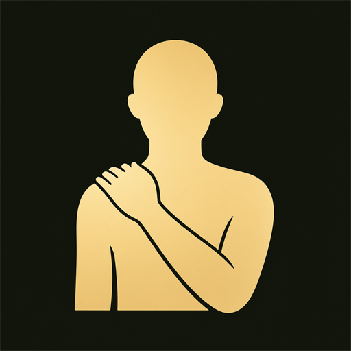
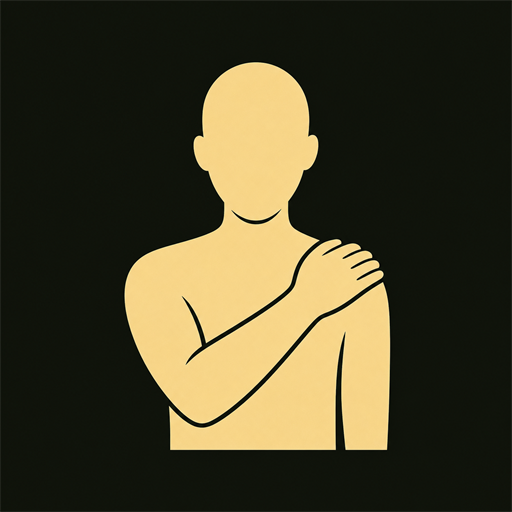
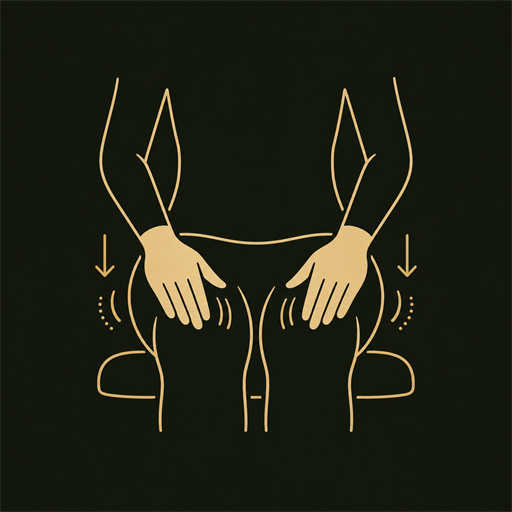
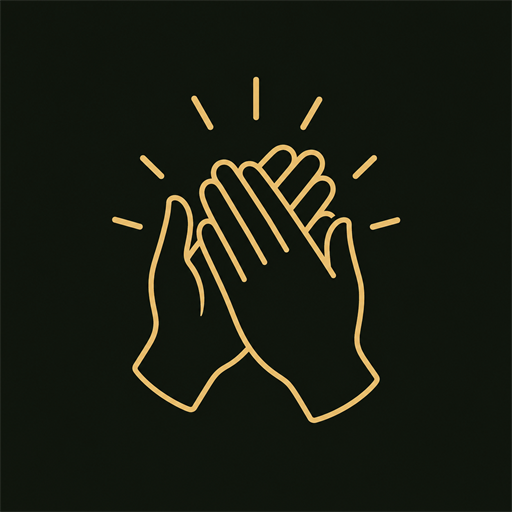
肩頸不舒服，全部改拍大腿也可以
不是大吼，是替胸口打開一扇窗
吸氣 → 預備 → 三、二、一 → 哈
先各區練 · 再一層一層疊起來 · 最後一起停
不分區，所有人一起
跟著音樂節奏一起加快，越來越有勁
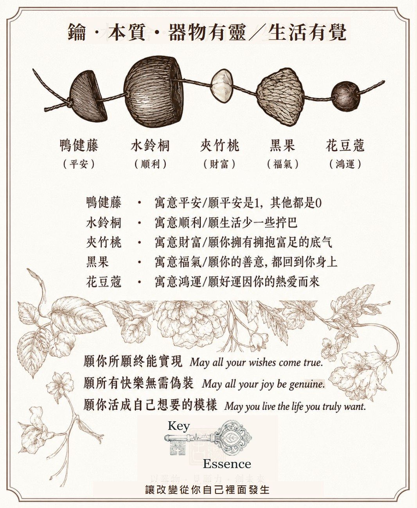
每一顆果實都帶著一個祝願
串起來，是你為自己留下的提醒
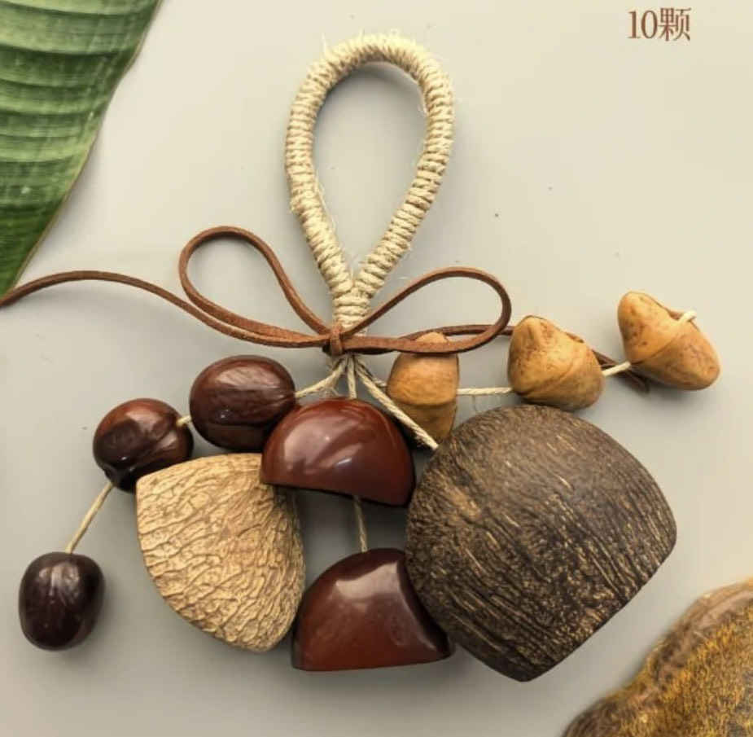
把注意力放在手指、麻繩、果實的觸感
如果腦袋又回到工作清單，就把注意力帶回手上的材料
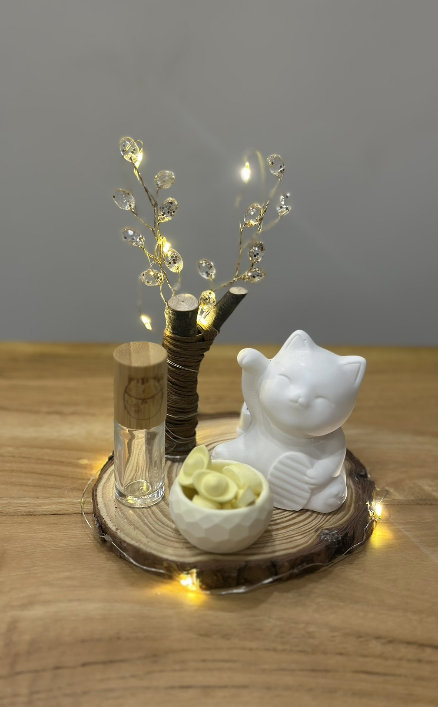
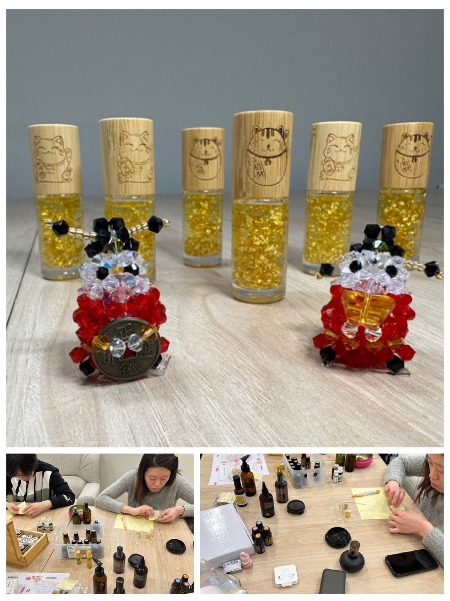
手作的時候，偶爾抬頭看看——這些都是平時帶大家做的小物
輕搖一下
聽它像不像今天被你照顧到的一部分
加入官方 LINE，留言給我一句話，
我留了 30 分鐘線上陪伴時間給你，只要 NT$299。
（今天到場醫護夥伴限定價，非日常服務價格）
這 30 分鐘，我們可以一起看：
生命靈數（含流年走向）・人類圖關係諮詢
讓改變從你自己裡面發生
謝謝你，今天也把一點照顧留給自己。
掃描 QR Code 追蹤我的 Facebook，
到置頂貼文留言，並公開分享，
就能帶走一顆精美擴香石。
謝謝你留到最後，這份心意，留給你。